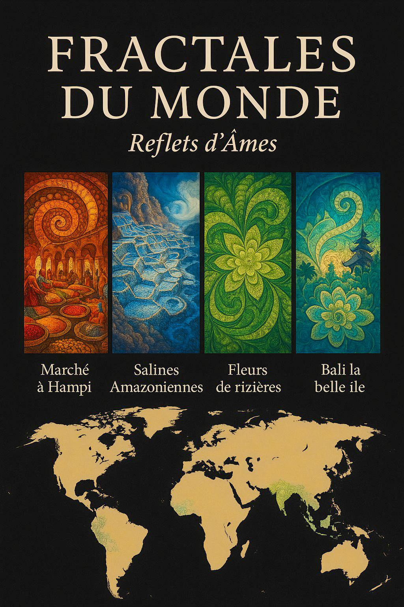
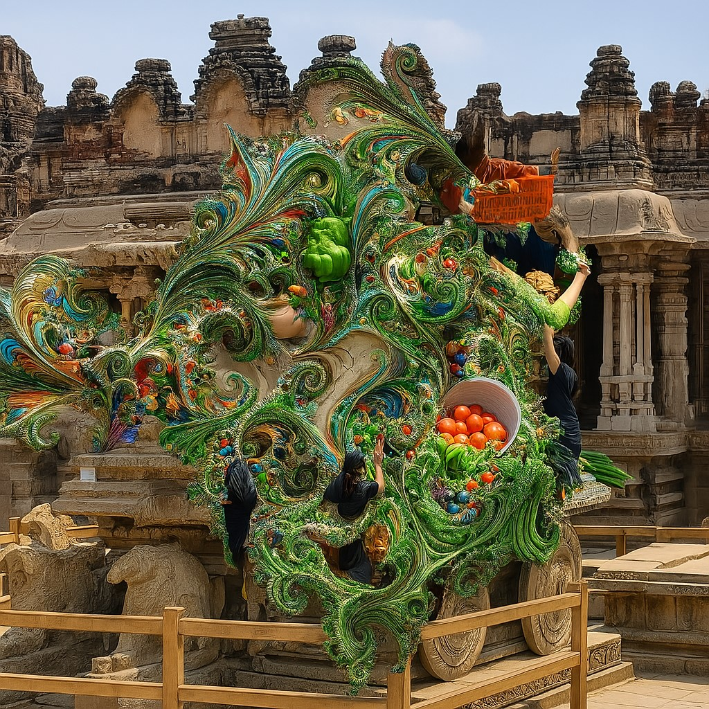
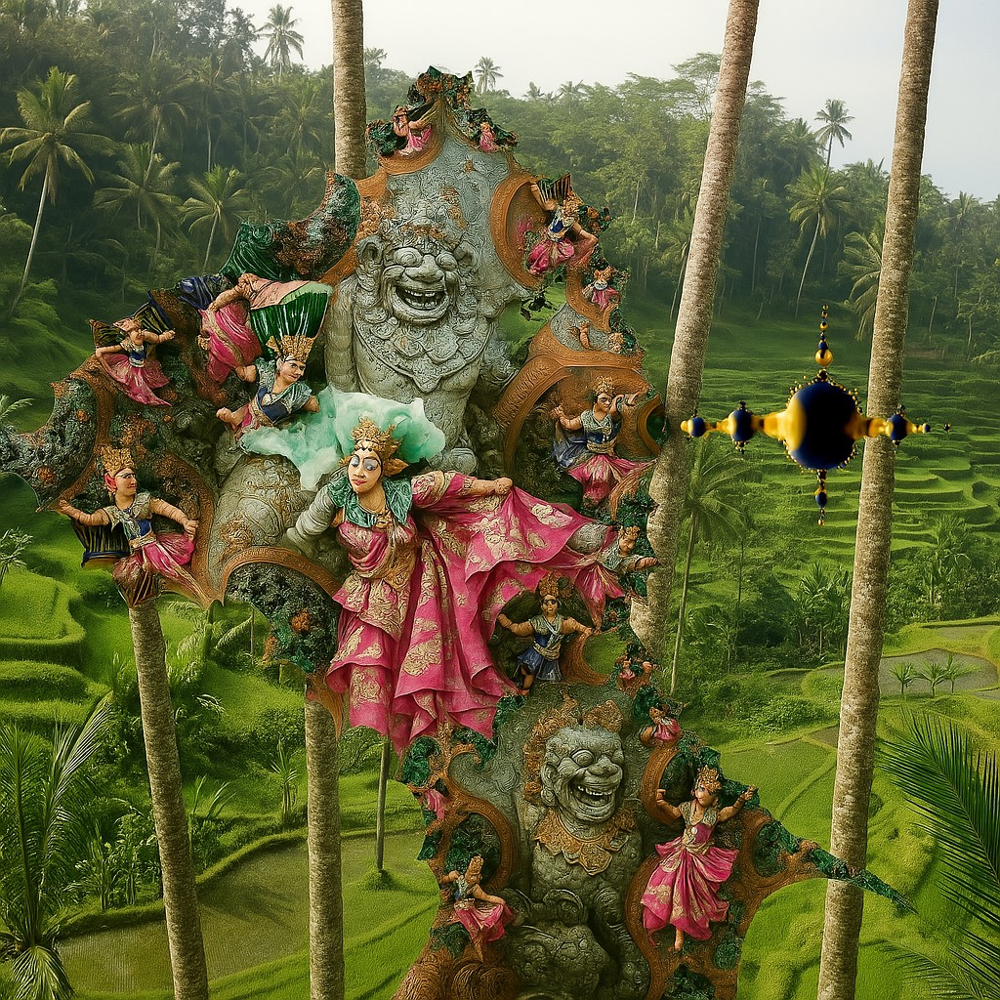
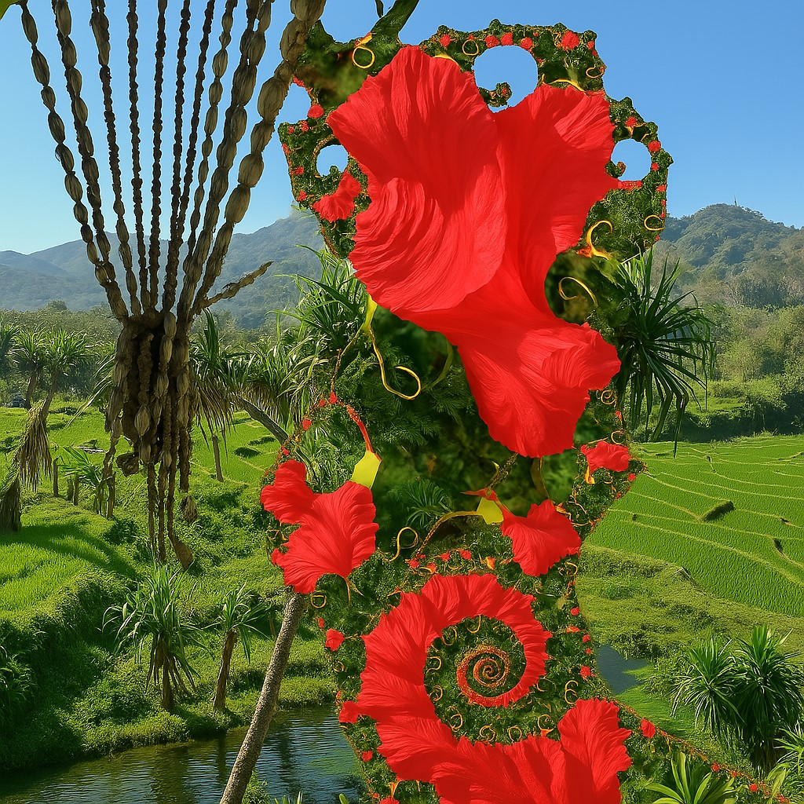
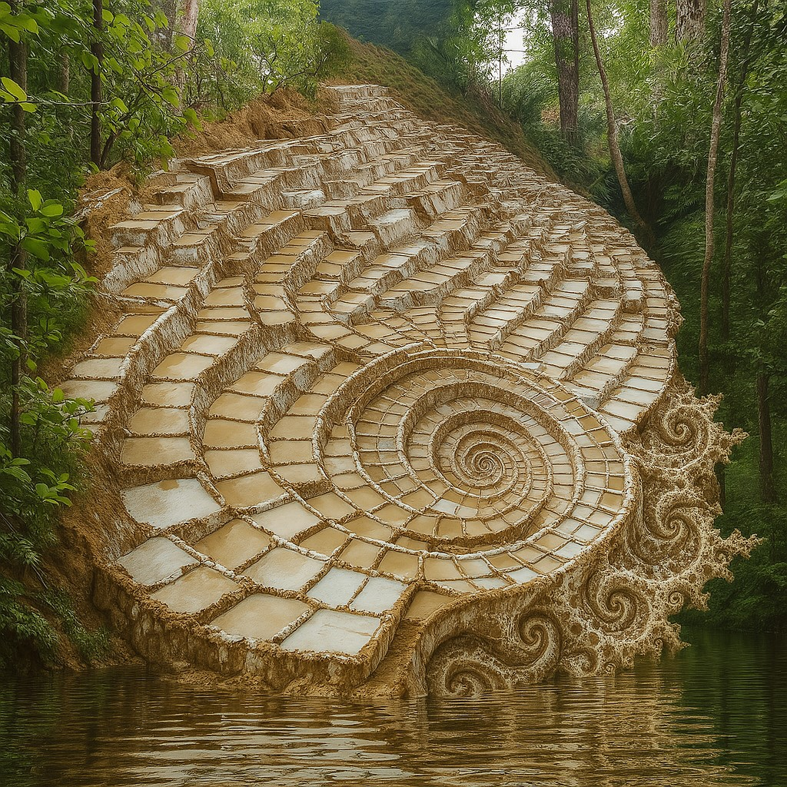

🇫🇷 Français
🖼️ Fractales du Monde : Reflets d'Âmes
✨ Entrer dans l’exposition
🖼️ Prologue sensible – Introduction poétique
🗺️ Carte interactive
📚 Sommaire de l'exposition
📚 Sommaire de l'exposition
🗺️ Carte interactive
🇮🇳
Salle 1 — Marché à Hampi
✨ Char mystique de Hampi
🌈 Mandalas et étoffes ondulantes
🎶 Piliers musicaux —
Écouter
🏛️ Ruines de Hampi —
Découvrir
🎙️ Narration immersive —
Explorer
🌺
Salle 2 — Bali la belle île
🌾 Rizières sacrées et offrandes
🕉️ Temples hindous et spirales d'encens
🎶 Gamelan —
Écouter
🏛️ Visite immersive —
Découvrir
🎙️ Sons de prière —
Explorer
🌾
Salle 3 — Fleurs de rizières
🌸 Terrasses de riz en pétales
💧 Spirales végétales et lumière aquatique
🎶 Berceuse —
Écouter
🏛️ Musique néoclassique —
Découvrir
🌾 Ambiance champêtre —
Explorer
🏔️
Salle 4 — Salines Amazoniennes
✨ Terrasses de sel
🌊 Mémoire minérale
🎶 Chants amazoniens —
Écouter
🏛️ Forêt & rivières —
Découvrir
🎶 Icaro chamanique —
Écouter
🗺️ Carte interactive
📚 Voir le sommaire

🏛️ Salle 1 — Marché à Hampi
Salle suivante →
🗺️ Retour à la carte
📚 Retour au sommaire

Élément
Lien
Piliers musicaux du temple Vithala
🎶
Écouter
Ambiance ruines de Hampi
🏛️
Découvrir
Narration historique immersive
🎙️
Explorer
🌺 Salle 2 — Bali la belle île
← Salle précédente
Salle suivante →
🗺️ Retour à la carte
📚 Retour au sommaire

Élément
Lien
Gamelan balinais & sons de cérémonie
🎶
Écouter
Visite immersive de Bali
🏛️
Découvrir
Sons de prière et offrandes
🎙️
Explorer
🌾 Salle 3 — Fleurs de rizières
← Salle précédente
Salle suivante →
🗺️ Retour à la carte
📚 Retour au sommaire

Élément
Lien
Berceuse des rizières
🎶
Écouter
Musique néoclassique inspirée du riz
🏛️
Découvrir
Ambiance matinale dans les champs
🌾
Explorer
🏔️ Salle 4 — Salines fractales
← Salle précédente
🗺️ Retour à la carte
📚 Retour au sommaire
🌌 Fin du voyage

Élément
Lien
Chants traditionnels amazoniens
🎶
Écouter
Ambiance forêt & rivières
🏛️
Découvrir
Icaro sacré — chant chamanique amazonien
🎶
Écouter